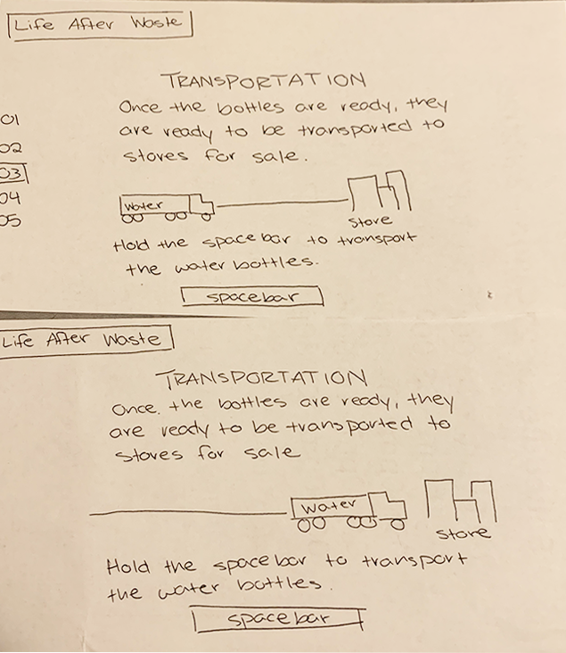
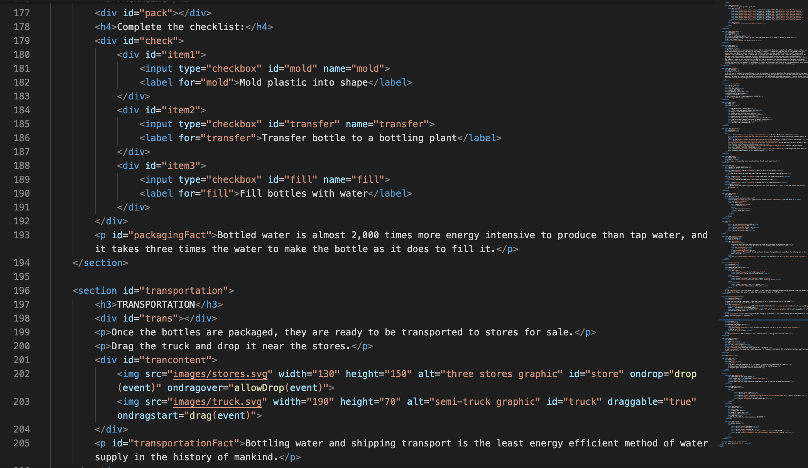
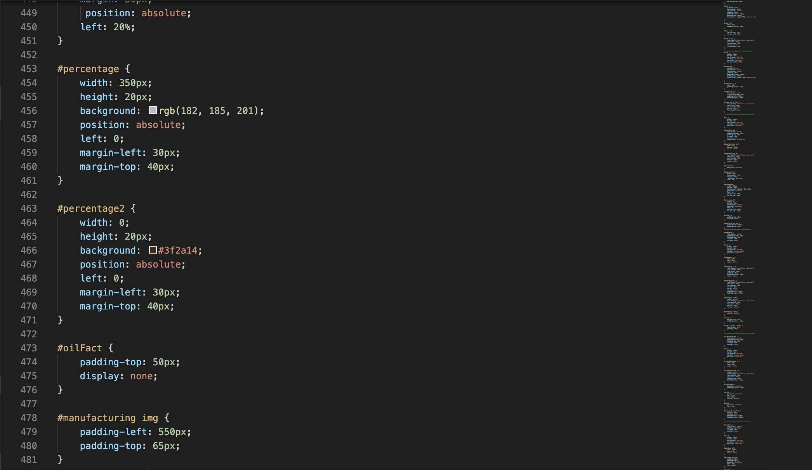
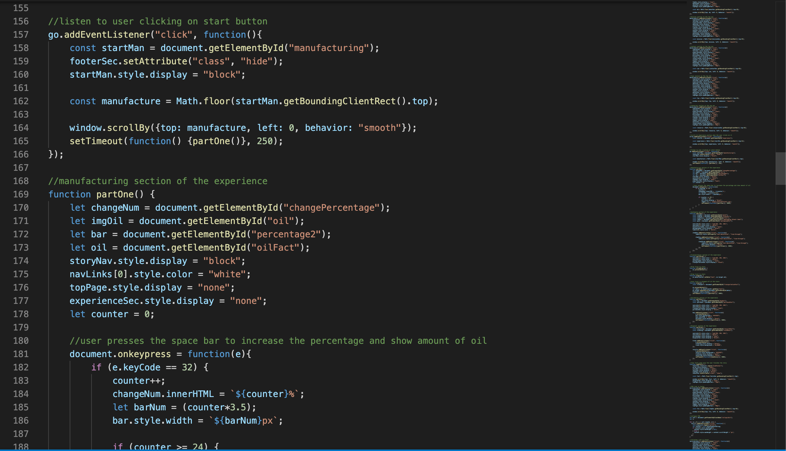

Visual Design, Interaction Design, Coding, Prototypes, Wireframes, User Research
Tools
Sketch, Visual Studio Code, Adobe Illustrator, HTML, CSS, JavaScript
Timeline
Feb. 1 - Mar. 12, 2020 (1 month)
Overview
Background
This project was the final project for my JavaScript course at UC Davis. This project would be submitted to the 2020 IAMCR conference which calls for proposals of projects that cover the theme "Reimagining the Digital Future: Building Inclusiveness, Respect and Reciprocity." I chose to cover the topic on sustainability and plastic pollution because I felt that it was an immediate issue in the world that could be fixed by a change in our human behavior.
Problem
Plastic pollution has become a major problem in the world because most of the plastic is not biodegradable or recycled. The plastic remains on the Earth for hundreds of years where it will break down into microplastics, and ingested by humans and animals as well.
Solution
The idea was to create a website that would help people understand the lifecycle of plastic bottles, and therefore would lower the usage of plastic water bottles after they understand how harmful it is to the environment.
Goals
Build an interactive website using JavaScript
Design a unique interface that engages the user
Address the theme of sustainability through content and visual design
Process
Brainstorm
I created a structured mind map to brainstorm the topic for my final project. I picked five topics I was interested in and passionate about, and I created branches off of that idea. I tried to understand what the main issues were in order to create a solution with my website.
Research
Comparative Research
After selecting my topic on climate change, I did some research on existing projects to see how they are interactive and engaging to the user. I looked at the NASA Climate Change website and the LiveGreen app.
NASA Climate Change Website
I thought the moving images and statistics on the front page were really engaging to the user because it included an interactive slideshow for users to learn more and visually see. The moving images intrigued me to look through the website because the interface was visually interesting.
In this section, I thought the moving image in the background helped make the information more interesting because there was constant motion. The microinteractions that the user had in this section, like changing the information inside the circles on hover, also helped the user stay engaged
LiveGreen App
The LiveGreen app had a new approach to creating an account that I enjoyed because their login process mimicked the style of sending texts. It was different from the standard that I was used to, but it was also extremely engaging as well.
Academic Research
I looked at information on my topic to learn more about plastic pollution. It would also help me in adding statistics and facts in my website to help users learn. I looked at four sources of information: two TED Talks, an article on The Guardian, and a Buzzfeed video.
TED Talk: What really happens to the plastic you throw away? - Emma Bryce
This TED Talk discusses the lifecycle of plastic from how it’s created to where it goes when it gets thrown away. It gave me valuable information on the effects of plastic in the world and where the plastic may end up depending on how humans dispose of it.
TED Talk: How I use art to tackle plastic pollution in our oceans - Alejandro Duran
In this TED Talk, artist Alejandro Duran talks about his journey with art and plastic. He begins with how he visited a beach, but it was covered in plastic that washed up to the shore from countries around the world. He then started cleaning up the plastic and arranging them based on the colors to form his photography and art. I wanted to incorporate something like this in my website would help reduce the use of plastic because it sends a message to people on how their actions impact the world.
The Guardian: Single-use plastics a serious climate change hazard study warns
This article in The Guardian talks about the plastic cradle to grave lifecycle and how it is impacting the Earth. The statistics that they provide were terrifying to read, and I want to include the statistics they listed in the article on my website because it will provide context and information for the user.
BuzzFeed Video: Home Chef Tries The No Trash Trader Joe's Challenge
This Buzzfeed video follows Stevie who lives a zero-waste life, and she attempts to shop at Trader Joes to create a side dish without purchasing anything with plastic. It was interesting to see her thought process while she was shopping in Trader Joes. It shows how easy it can be to live a zero-waste life because she just found a more creative way to make something, so she doesn’t have to buy the ingredient in packaging. I thought that including personal stories or things that people do to life a plastic-free life on the website would make it easier for other people to change because they see that other people can do it.
User Research
For my user research, I created two different personas with Xtensio. Since my topic is on sustainability, I created a persona (pink) of a user who is environmentally aware, and they want to learn how to live a more sustainable life. The second persona (blue) is an average person who has the usual daily activities and worries. I thought that since these two personas are the probably two main categories of users that will be visiting the website, I wanted to see what their goals and personalities are. This helps me know what the users will be looking for when they go on my website, and I can create content that will fit their needs.
Paper Prototypes
To get a sense of the functionality, I created some quick paper prototypes to show some of the types of interactions the website would have. My idea was that I would create 5 events that taught users the lifecycle of plastic. In the protypes, I showed the "transportation," "manufacturing," and "packaging" sections where it would require the user to press the space bar or fill out a checklist.

Digital Design
I created this digital design with Sketch and Adobe Illustrator for the graphics. This was to design the entire design of my website. My idea was to create a scrollable page that would move onto the next section once the user has completely the previous section.
Digital Prototype
I used InVision to create a digital prototype of my interactive website. It would show the main elements that the user would be doing.
Development
I used Visual Studio Code to build the site, and I used GitHub to host it. The coding took me about three days of consistent coding to complete the website. I created the HTML first, CSS second, and JavaScript last.
Section of HTML
I added all the necessary text for the entire website on one HTML file, and I separated each part of the website with section elements. 
Section of CSS
I styled my website in the CSS. I used classes to target specific sections and ids to target single elements. 
Section of JavaScript
After building the website, I used JavaScript to hide and show elements to move from section to section. 
Final Product
Takeaways
Reflection
I was really surprised by how much I could do after learning JavaScript for 10 weeks. This project helped me think more critically in coding because JavaScript requires more problem solving than HTML and CSS, and I was able to build an entire website by myself that functions as I imagined. After finishing my final project, I got excited by the many possibilities I could do with design and developing. I want to challenge myself further in creating interactive websites to engage the user.
Challenges
Smooth Scrolling Effect One of the challenges was learning how to create a smooth scrolling effect with JavaScript that would move from one section to the next. I learned that I could add a JavaScript file that has the effect already coded in. I would have to call the script to run in my own JavaScript file when the user clicks on a specific element.
Set Timeout Function In the experience, the screens would move from one section to the next, but a fact would appear before it changed screens. I had to figure out how to use the set timeout function to allow enough time for the user to read the fact, but intuitive enough for the user to understand it is a delay in changing sections.
Interactivity I had to understand my constraints with time and ability, so selecting how interactive the website would be was a challenge. I considered the topics I learned in class and outside of class to put together my website.
Future Improvements
To further expand the website, I would include more microinteractions and transitions that guide the user from section to section. I would add a news section that would allow users to read updates on the topic, and I would like to add live statistics for the user to comprehend the impact.